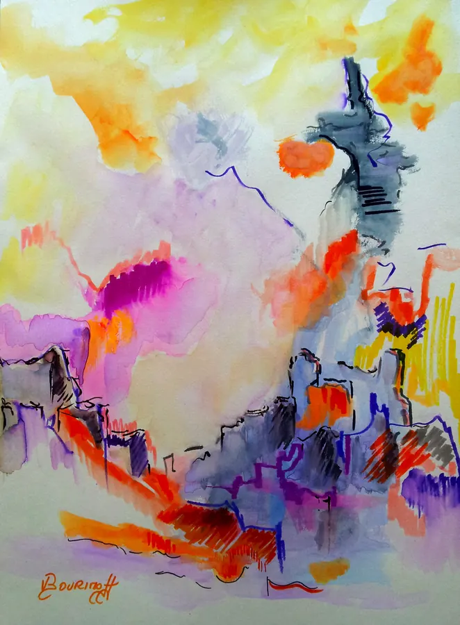
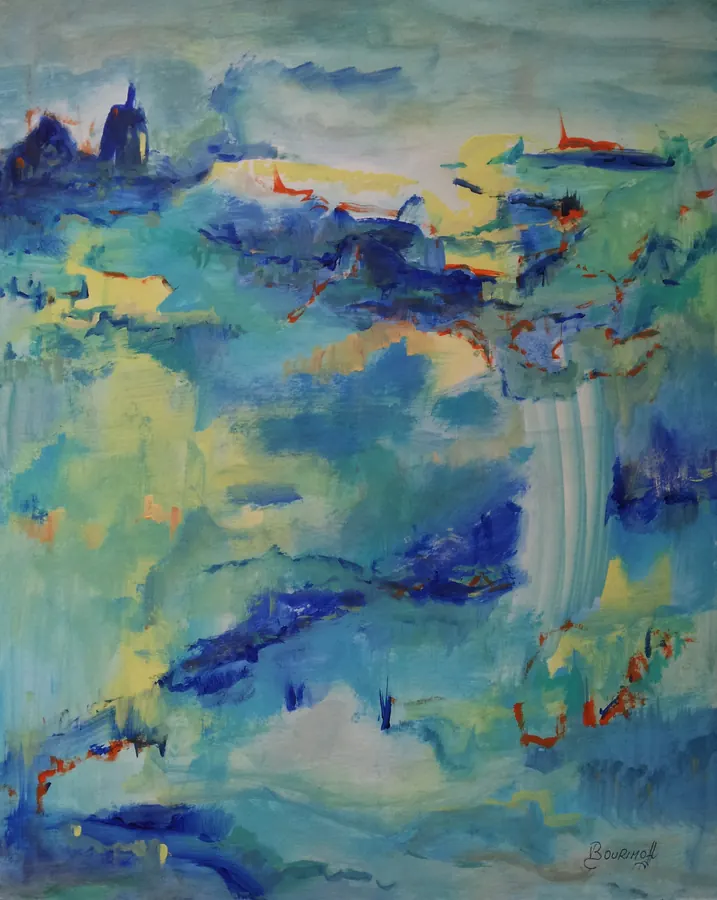
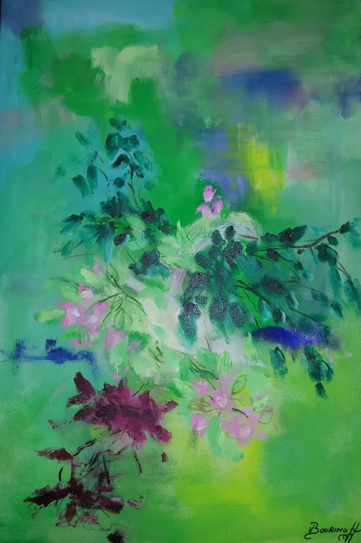
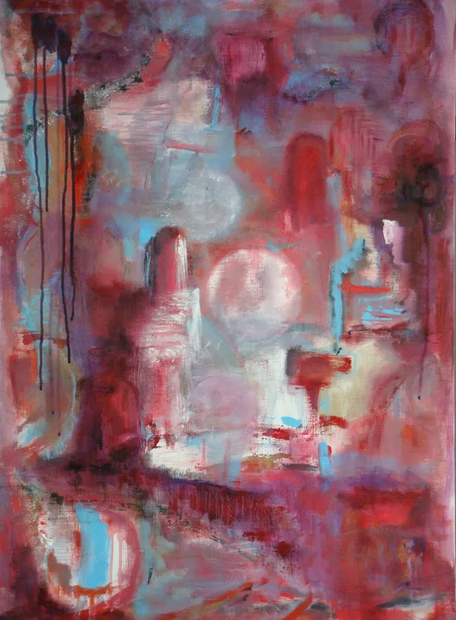
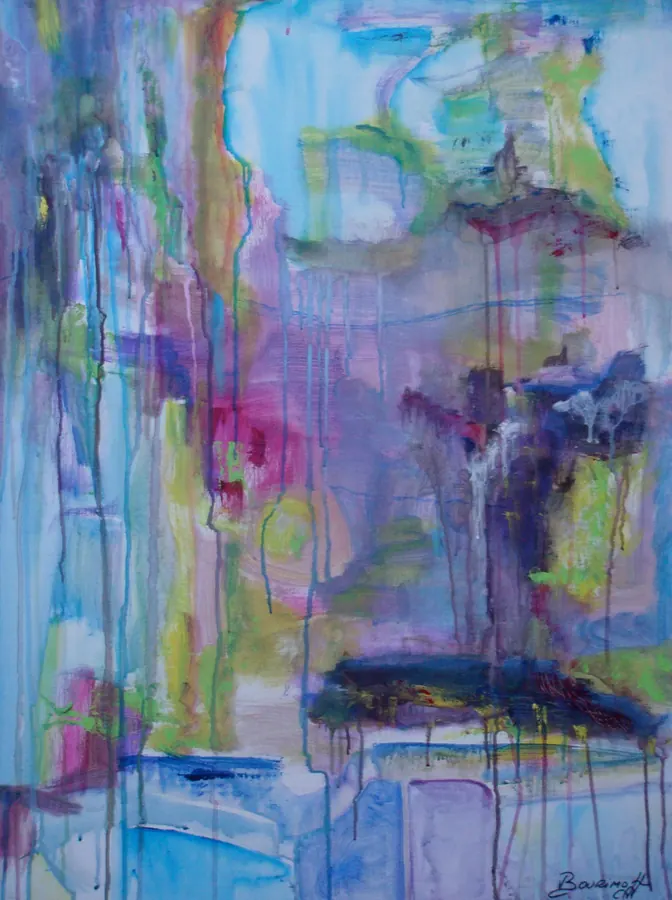
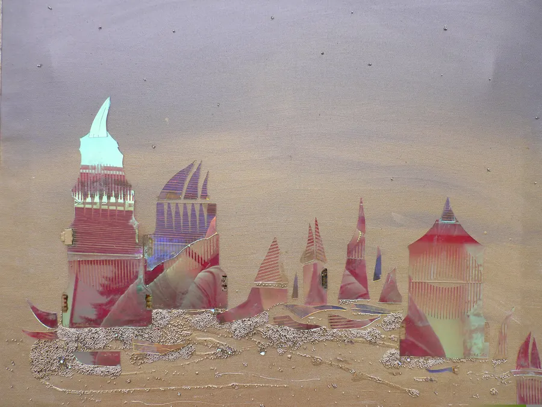
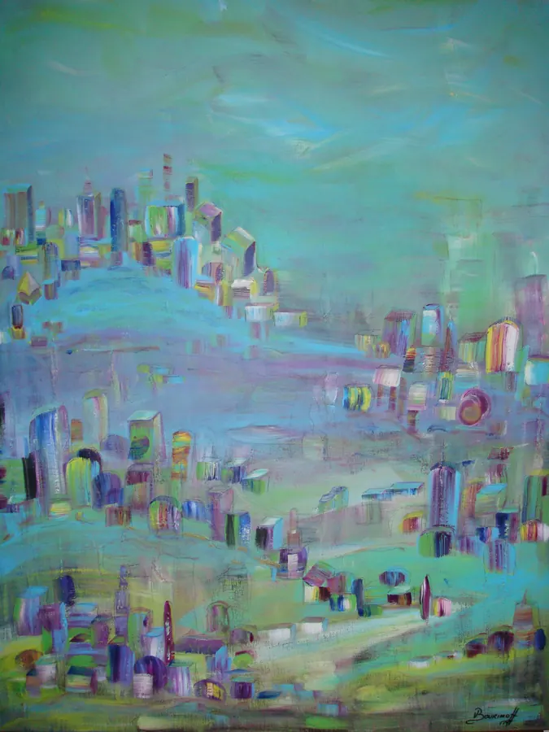
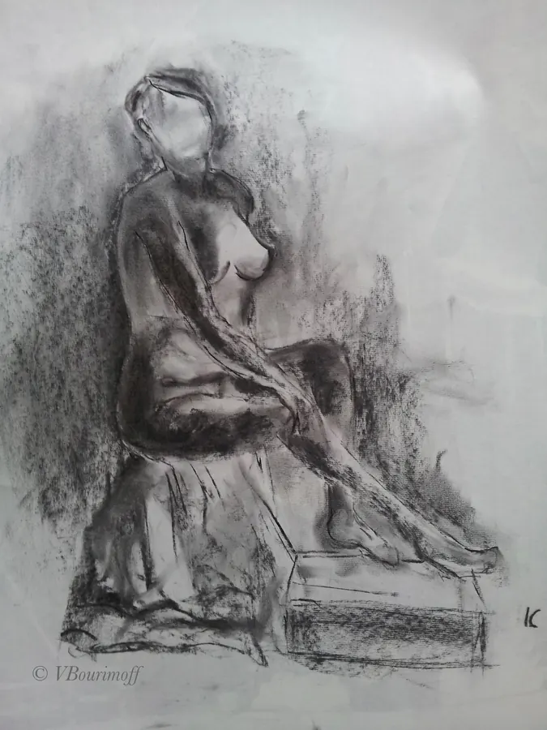
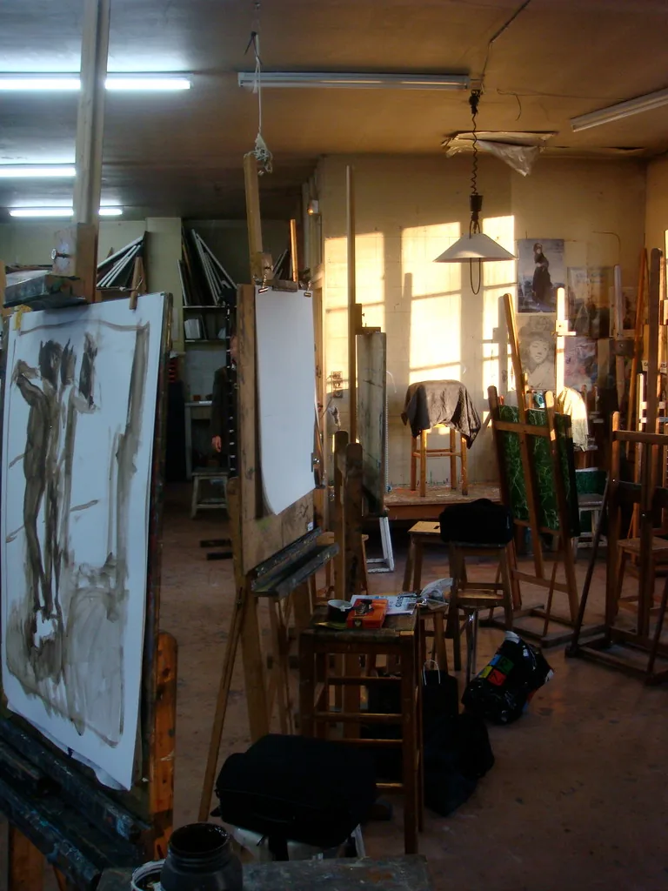

Peinture · Aquarelle · Dessin
Plus de cent œuvres, de 2003 à 2020
Par là où tout commence…This is where it all starts from…
Toutes ses expériences, ses rêves et ses émotions, Valérie Bourimoff laisse son subconscient les interpréter. En cela, elle sublime en un champ de couleurs, de riches espaces imaginaires.
Œuvres choisies
Les chapitres
De 2003 à 2020, chaque période ouvre un nouveau chapitre : une recherche, une matière, une émotion.
- 2020De retour13 œuvres
- 2019Je m'amuse tellement avec toi !10 œuvres

2017Mon coup de foudre pour l'aquarelle !6 œuvres
2015Acte II, scène I15 œuvres
2013Dix ans déjà !13 œuvres
2012L'insatiable désir de créativité18 œuvres
2009L'expression d'une vie intérieure, symbolique du subconscient9 œuvres
2006Série Dubaï, l'imaginaire absolu3 œuvres
2003Abstractions verticales ou la rencontre d'un lointain entre l'Orient et l'Occident4 œuvres
DessinsCrayons, fusain, crayons pastel13 œuvres

Une vie intérieure
Ses œuvres traduisent le lointain et la création d'un lieu originel idéal, propre à son état d'être.
C'est l'expression consciente, spontanée et instinctive d'une vie intérieure riche et profonde qui l'a fait voyager autant que son public.
Sa palette de couleurs reflète avec simplicité une âme pour laquelle la lumière est source de vie.
Une œuvre vous touche ?
Pour une acquisition, une exposition ou simplement pour échanger autour d'une toile, écrivez à l'artiste.
Prendrecontact